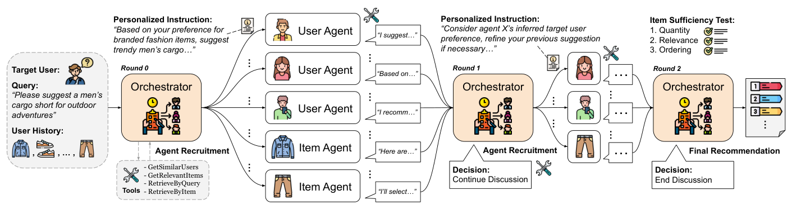

Multi-Agent Collaborative Filtering: Orchestrating Users and Items for Agentic Recommendations (多智能体协同过滤：编排用户与物品智能体实现智能体化推荐)
- 会议/期刊: WWW 2026
- 作者与机构: Yu Xia, Julian McAuley (UCSD); Sungchul Kim, Tong Yu, Ryan A. Rossi (Adobe Research)
- 推荐链路定位: 重排（候选生成 + 列表级重排，端到端由 LLM 智能体讨论产出）
- 研究方向: 对话推荐与智能体仿真 / 大语言模型推荐
- 论文原文: https://arxiv.org/abs/2511.18413v3
- 开源代码: 暂未开源
TL;DR (1分钟核心速览)
现有智能体推荐要么是单智能体 plan-execute，要么是通用角色分解的多智能体流水线，二者都把用户-物品历史仅当作 prompt 上下文，未像协同过滤那样结构化地聚合邻域证据。MACF 将相似用户与查询相关历史物品分别实例化为带独立 profile 的 LLM 智能体，由中心编排器动态招募、下发个性化指令、多轮讨论并做充分性检验后输出排序列表。在 Amazon Clothing/Beauty/Music 三域、用户模拟器驱动的 H@10/N@10 协议下，MACF 相对最强基线 TAIRA 的 HR@10 分别提升 17.8%/16.5%/54.9%。
Background & Motivation (背景与核心矛盾)
- 主流范式: 智能体推荐分两支——单智能体 plan-and-execute 循环（ReAct/InteRecAgent）与通用角色分解的多智能体流水线（MACRec/MACRS/TAIRA），后者已引入角色分工与协调。
- 前人局限: ① 单智能体是唯一决策者，难以同时吸收多样化的偏好信号；② 多智能体的角色（如"检索员/分析员"）与偏好信号源（相似用户、相关物品）松散解耦，协同信号只能以原始历史文本形式塞进 prompt，无法像 CF 那样按邻域结构组织与加权。
- 核心洞察 (Key Insight): 传统 CF 的 UserCF/ItemCF 本质是"从相似用户侧与相关物品侧各取证据再做聚合"；LLM 多智能体恰好提供了"多视角独立推理 + 语言化协商"的机制，可以把 CF 的静态加权聚合替换为可自适应调整的对话式聚合。
- 本文切入点: 让智能体的身份直接对应 CF 的邻域元素（user agent ↔ 相似用户，item agent ↔ 相关历史物品），再由编排器按查询动态决定谁参与、如何发言。
Method (核心方法设计)
1. 整体框架 (Overall Architecture)
给定目标用户 \(u\)、自然语言查询 \(q\) 与历史 \(H_u\)，编排器先调用四个检索工具（GetSimilarUsers、GetRelevantItems、RetrieveByQuery、RetrieveByItem）选出 \(n\) 个相似用户与 \(n\) 个查询相关历史物品，分别实例化为 user agent 与 item agent，各自携带紧凑 profile。随后进入至多 \(T_{\max}=5\) 轮讨论：每轮编排器先基于累积候选起草 top-\(K\) 列表 \(\hat{R}_t\)，做充分性检验；不通过则招募子集 \(\mathcal{A}_t \subseteq \mathcal{A}\) 并下发个性化指令，各智能体在共享讨论历史下提议、反驳、调用工具扩召回；通过或轮次耗尽即输出 \(\hat{R}_t\) 为最终列表。
flowchart TD
A["目标用户 u + 查询 q + 历史 H_u"] --> B["编排器调用检索工具<br/>GetSimilarUsers / GetRelevantItems"]
B --> C["实例化 User Agents + Item Agents<br/>（各带独立 profile）"]
C --> D["编排器起草 top-K 列表 R_t"]
D --> E{"充分性检验<br/>数量/相关性/排序"}
E -->|通过或 t=T_max| F["输出最终排序列表"]
E -->|不通过| G["动态招募子集 A_t<br/>+ 个性化协作指令"]
G --> H["智能体讨论/工具调用<br/>提议·反驳·扩召回"]
H --> D
2. 关键设计拆解 (Key Designs)
-
动态智能体招募 (Dynamic Agent Recruitment, DAR)：痛点在于通用多智能体的角色模板与偏好信号无关，且固定邻域规模无法适配查询难度。MACF 在 \(t=0\) 时以 $\(\mathcal{N}_u=\text{GetSimilarUsers}(u,n),\quad H_{u,q}=\text{GetRelevantItems}(u,q,n)\)$ 取候选邻域，再按与 \(q\) 的相关性二次过滤后才实例化智能体；后续轮次仅保留对改进 \(\hat{R}_t\) 最有用的子集 \(\mathcal{A}_t\)。直觉：把 CF 的"邻居选择"从离线固定 top-\(n\) 变成查询条件下的在线选择，避免无关邻居污染讨论。
-
个性化协作指令 (Personalized Collaboration Instruction, PCI)：痛点在于统一指令会让所有智能体输出同质化证据。编排器为每个 \(a\in\mathcal{A}\) 依据其 profile、目标用户信息与当前 \(\hat{R}_t\) 的缺陷（并列、冲突、低相关项）生成差异化任务——user agent 侧重从 \(\mathcal{N}_u\) 提炼邻域偏好模式，item agent 侧重沿 \(H_u\) 追溯相关性路径。直觉：指令即"注意力权重"的语言化实现，把聚合权重从标量变成可解释的任务描述。
-
充分性检验与自适应工具调用 (Sufficiency Test + ATU)：终止条件要求同时满足 (i) 至少 \(K\) 个与 \(q\) 及推断偏好明确相关的唯一物品、(ii) 物品与智能体给出的理由对齐、(iii) 排序清晰。未通过时智能体可多次调用
RetrieveByItem围绕强锚点扩展、或用RetrieveByQuery替换跑题项。训练侧无参数学习（全部为 gpt-4o 提示工程，temperature 0.3），成本控制完全依赖该检验——图 2 显示绝大多数查询在第 3 轮前终止。
Experimental Setup & Evaluation Protocol (实验设置与评估协议)
- 数据集: 三个 Amazon 域（Clothing / Beauty / Music），沿用 TAIRA 的数据划分与自然语言查询集；原文未给出交互量统计表，此处不臆造数值。
| 数据集 | 域 | 查询来源 | 评估方式 |
|---|---|---|---|
| Amazon Clothing | 服饰 | TAIRA 查询集 | 用户模拟器驱动 |
| Amazon Beauty | 美妆 | TAIRA 查询集 | 用户模拟器驱动 |
| Amazon Music | 音乐 | TAIRA 查询集 | 用户模拟器驱动 |
- 数据划分与防穿越: 沿用 Yu et al. (TAIRA) 的划分与查询集，采用用户模拟器驱动评估（模拟用户对推荐列表反馈），而非离线 Leave-One-Out。
- 排名评测协议: 报告 H@10 (HitRatio@10) 与 N@10 (NDCG@10)；由模拟器判定相关性，属于采样式/模拟交互评估而非全库 Full-Ranking，跨方法可比性依赖同一模拟器。
- 对比基线与超参: 三类基线——检索类（BM25、BGE-M3、BGE-Reranker）、传统 CF（ItemCF、UserCF，均用 embedding 对 CF 结果按查询重排）、智能体类（ReAct、Reflexion、InteRecAgent、MACRec、MACRS、TAIRA）。所有方法共享 BGE-M3 嵌入以保证公平；\(n=5\)、\(k=15\)、\(T_{\max}=5\)、\(K=10\)；智能体以 MCP 服务异步 HTTP 流式部署。
Key Experimental Results (实验关键数据)
1. 主实验对比 (Main Results)
| 方法 | Clothing H@10 | Clothing N@10 | Beauty H@10 | Beauty N@10 | Music H@10 | Music N@10 |
|---|---|---|---|---|---|---|
| BM25 | 0.0801 | 0.2543 | 0.2171 | 0.4546 | 0.1628 | 0.3336 |
| BGE-Reranker | 0.2970 | 0.5031 | 0.2980 | 0.4946 | 0.1763 | 0.3516 |
| ItemCF | 0.3804 | 0.6258 | 0.3199 | 0.5141 | 0.3106 | 0.5105 |
| UserCF | 0.3687 | 0.5926 | 0.3037 | 0.4998 | 0.2988 | 0.4780 |
| Reflexion | 0.4218 | 0.7002 | 0.4001 | 0.6203 | 0.3234 | 0.4900 |
| InteRecAgent | 0.4207 | 0.7035 | 0.3919 | 0.6136 | 0.2919 | 0.4585 |
| MACRec | 0.4205 | 0.6846 | 0.3834 | 0.5999 | 0.2634 | 0.4876 |
| TAIRA | 0.4447 | 0.7182 | 0.4655 | 0.7520 | 0.3519 | 0.5540 |
| MACF\(_{item}\) | 0.4363 | 0.7963 | 0.5027 | 0.8179 | 0.5088 | 0.7614 |
| MACF\(_{user}\) | 0.5134 | 0.7927 | 0.5368 | 0.8244 | 0.5134 | 0.7574 |
| MACF | 0.5238 | 0.7942 | 0.5421 | 0.8215 | 0.5450 | 0.7668 |
| Improv. vs TAIRA | +17.8% | +10.6% | +16.5% | +9.2% | +54.9% | +38.4% |
2. 消融实验 (Ablation Study)
| 变体 | Clothing H@10 | Clothing N@10 | Beauty H@10 | Beauty N@10 | Music H@10 | Music N@10 |
|---|---|---|---|---|---|---|
| MACF 完整 | 0.5238 | 0.7942 | 0.5421 | 0.8215 | 0.5450 | 0.7668 |
| w/o PCI | 0.5165 | 0.7902 | 0.5147 | 0.7836 | 0.5372 | 0.7417 |
| w/o DAR | 0.5029 | 0.7462 | 0.5053 | 0.7753 | 0.5448 | 0.7129 |
| w/o ATU | 0.4300 | 0.7516 | 0.4890 | 0.7882 | 0.4884 | 0.6682 |
3. 关键实验发现 (Key Findings)
- 协同信号的结构化注入是主要增益来源，而非"多智能体"本身：同为多智能体框架的 MACRec/MACRS 在 Music 上 H@10 仅 0.2634/0.2348，甚至低于 ItemCF 的 0.3106；而 MACF 达 0.5450。说明把智能体身份绑定到 CF 邻域元素（而非通用角色）才是关键，Music 域因物品语义跨度大、通用角色最易失效，故增益最大（+54.9%）。
- user 侧与 item 侧证据互补，且各自单独使用已能超越全部基线：MACF\(_{user}\) 在 Beauty 的 N@10 达 0.8244（略高于完整模型的 0.8215），MACF\(_{item}\) 在 Clothing/Beauty 的 N@10 达 0.7963/0.8179，均远超 TAIRA 的 0.7182/0.7520；但完整模型在三个域的 H@10 全部最优，说明双侧融合主要提升"命中覆盖"，单侧则在特定域更利于排序精度。
- 自适应工具调用 (ATU) 是最脆弱模块，且域间敏感度差异显著：移除 ATU 后 Music 的 N@10 从 0.7668 骤降至 0.6682（−12.8%），Clothing H@10 从 0.5238 降至 0.4300（−17.9%）；而 DAR 的移除对 Music H@10 几乎无损（0.5448 vs 0.5450）却使 N@10 掉 7.0%，表明"招募谁"影响排序质量、"能否反复检索"影响候选覆盖，二者作用维度不同。图 2 的轮次分布（多数查询 3 轮内终止）进一步说明充分性检验有效抑制了无效交互开销。
Highlights, Limitations & Rating (亮点、对比与审稿评价)
- 与代表作对比 (vs. Prior Work): 与 TAIRA 的本质区别在于 TAIRA 仍是任务分解式流水线、协同信号停留在 prompt 上下文，MACF 则把邻域元素提升为智能体本体并引入查询条件下的动态招募；与 AgentCF 的区别在于 AgentCF 用用户/物品智能体做行为模拟，MACF 直接面向推荐产出并加入编排器的多轮协商与终止判据；与 InteRecAgent/MACRec 相比，MACF 的增益不来自更强的工具链，而来自 CF 结构的显式对齐。
- 可迁移亮点: ① "充分性检验 + 轮次上限"的双终止机制可直接移植到任何多轮 LLM 推荐/追问系统以控成本；② 把召回侧的邻居选择做成"编排器在线决策 + 个性化指令"，可作为传统召回-重排级联中重排器的语言化替代方案。
- 审稿级局限批判: ① 评估可信度：全部指标依赖用户模拟器，缺少真实用户或离线全库排序对照，且未报告模拟器与真实偏好的相关性验证，跨方法比较存在系统性偏差风险；② 成本与可复现性：每查询需多轮多智能体 gpt-4o 调用（\(T_{\max}=5\)、\(n=5\) 双侧智能体），论文未报告 token 消耗、延迟与美元成本，也无开源代码，工业落地与复现均受限；③ 仅 4 页短文，缺少显著性检验、超参（\(n\)、\(T_{\max}\)、\(K\)）敏感性分析与失败案例剖析。
- 四维评分: 创新性 ⭐⭐⭐⭐ | 实验扎实度 ⭐⭐⭐ | 方法清晰度 ⭐⭐⭐⭐ | 落地价值 ⭐⭐⭐